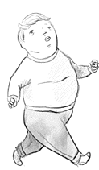

paired comparisons have become de facto for observer preference
estimate time to set up / num participants
So, what can we get from the web?
But...
limitations of IQRI
Maybe no control is a good thing? - real-world data
Me, just a minute ago
Are other experiments better than TMOs? C2G?
| Scene | 'Web' Experiment | Colourwar | ||
|---|---|---|---|---|
| τ | Significance | τ | Significance | |
| Atriumnight | 0.4286 | 0.8095 | p < 0.01 | |
| Belgium | 0.5111 | p < 0.01 | 0.7778 | p < 0.01 |
| Bristolbridge | 0.7143 | p < 0.01 | 0.5714 | p < 0.01 |
| Clockbuilding | 0.0714 | 0.2143 | ||
| Fog | 0.4444 | 0.3889 | ||
| Foyer | 0.3333 | 0.3333 | ||
| Indoor | 0.5238 | 0.8095 | p < 0.01 | |
| Memorial | 0.5000 | 0.4286 | ||
| Synagogue | 0.7857 | p < 0.01 | 0.8571 | p < 0.01 |
| Tahoe | 0.4667 | 0.4667 | ||
| Tinterna | 0.8667 | p < 0.01 | 0.8667 | p < 0.01 |
| Tree | 0.2381 | 0.7143 | p < 0.01 | |
| Venice | 0.1429 | 0.7143 | p < 0.01 | |
you cant just sling stuff on the web and hope for the best
Any Questions?
/
#